Kế hoạch triển khai · Báo cáo
Báo cáo đợt hoàn thiện PH-01 và giao diện trước PH-02 (26–27/11/2026)
1. Kết luận
Giao diện: cả 11 khu vực web đã dựng trên mock theo OpenAPI, cùng shell (PID-00012) và bộ mock (PID-00013). Chạy được trên máy ở nhánh tích hợp preview/ui-ph02 (mục 3). Mỗi khu vực có PR riêng vào develop, có QC chéo độc lập.
PH-01: các PID còn lại đều có PR đạt QC độc lập: PID-00012, 00013, 00014, 00016, 00021 (SPK-01 Lần 3 qua proxy), 00025 (SPK-03), 00159; thêm các PR sửa theo PC-04, PC-05. Cổng ra PH-01 chưa được xác nhận: đó là việc của PO (PC-05 P31), kèm các mục ở mục 7.
Merge: theo yêu cầu “Merge hộ tôi đi” của PO, mọi PR đạt QC đã vào nhánh đích qua hai PR gộp (mục 5): #160 vào main (31 PR, cùng #38 squash riêng) và #161 vào develop (12 PR giao diện, kèm main mới).
Phiếu chốt để PO làm việc: PC-06 (PR #112) là phiếu duy nhất của đợt này: mục đã chốt theo đề xuất, mục PO chọn trong phiên, câu chốt khi làm rõ 11 PID web (nhóm H) và bảng “Còn chờ PO”. Các mục của PH-01 đã đánh dấu trong PC-05 (PR #124).
2. Yêu cầu của PO và quyết định
PO yêu cầu ngày 26–27/11/2026: hoàn thiện PH-01; đưa task giao diện lên sớm nhất trong PH-02 để Dev theo dõi trực quan; các vấn đề phát sinh chốt theo đề xuất và xuất PC; OIDC viết mock server để test, chưa dùng eTroy thật; key provider dùng key proxy do đội tự cấp; gọi phiên chạy song song, QC chéo, đạt thì merge.
| Mã | Quyết định | Căn cứ | Ghi ở |
|---|---|---|---|
| D-KEY | Key proxy (cổng trung gian PO tự cấp) tính là key provider để test và phát triển. File key ở <checkout chính>\.sires\provider-keys.env, Git bỏ qua, quyền chỉ user hiện tại; lệnh nhập scripts/development/set-provider-keys.ps1 | PO chọn trong phiên | PC-05 S-K1, S-K2, S-DK (#124); PC-06 D2 (#112); PR #118 |
| D-OIDC | Chưa nối eTroy OIDC thật; OIDC mock server PID-00160 cho cục bộ và staging PH-02; sửa eTroy_OIDC (ETR-10 nonce, ETR-07 logout) để trước khi nối thật | PO chọn trong phiên | PC-06 C1–C4, DEC-65 (#112); PR #121, #130 |
| D-UI | 9 PID web của PH-03–PH-06 kéo lên PH-02 ở mức “Xây với mock”; Hội tụ với backend thật giữ ở cổng giai đoạn gốc | PO yêu cầu; cách làm chốt theo đề xuất | PC-06 G1, DEC-64 (#112); tickets 2, 3 |
| D-BRANCH | PID PH-01 và tài liệu vào main; mã PH-02 vào develop sau QC độc lập, không chờ mốc DEC-59 | Chốt theo đề xuất | PC-06 G2, DEC-63 (#112); AGENT.md |
| PC-05 | 75 mục đánh dấu: chọn đề xuất cho mọi mục trừ S-K1, S-K2 (theo D-KEY); P31 duyệt danh sách điều kiện, xác nhận cổng ra vẫn là của PO | Chốt theo đề xuất | PR #124; nhóm II Google Scholar vào PRD ở PR #132 |
| PC-06 | 24 mục quyết định, nhóm H (câu chốt khi làm rõ 11 PID web), bảng “Còn chờ PO” | Chốt theo đề xuất / PO chọn | PR #112 |
Phiên Dev được PO cho làm rõ PID web (PC-06 G6): mọi câu trả lời ghi “chốt theo đề xuất (PO ủy quyền 26/11/2026)” trong hồ sơ PID; câu không có căn cứ để đề xuất để mở (phiếu I) và đưa vào “Còn chờ PO”.
3. Giao diện trên mock
Nhánh tích hợp preview/ui-ph02 (không được bảo vệ, chỉ để xem và để các khu vực dựng tiếp; không merge đi đâu) gộp develop, main và các PR giao diện. Trên nhánh này: lint, typecheck, build của @sires/web đạt, 725/725 test trong 68 file đạt (07:00, gồm đủ 11 khu vực).
Chạy trên máy PO (PowerShell):
git fetch origin git worktree add ..\sires-preview origin/preview/ui-ph02 cd ..\sires-preview pnpm install --frozen-lockfile pnpm --filter @sires/web dev:mock
Mở http://localhost:5173. Mock bật bằng chế độ mock của Vite; bản build production không chứa mock (có test chặn). Khi mock khởi động, trang trắng khoảng 1–2 giây.
| PID | Khu vực | PR (→ develop) | QC chéo |
|---|---|---|---|
| PID-00012 | Shell: TopBar, ProjectRail, routing, i18n VI/EN, client API, client SSE, chip trạng thái, kho nháp, thẻ Interactive Agent Prompt, Dialog dùng chung | #138 (→ main) | Đạt, Lần 3 (b157d02) |
| PID-00013 | Mock theo OpenAPI cho mọi khu vực, dữ liệu mẫu tiếng Việt và English | #131 (→ main) | Đạt, Lần 2 (f406d47) |
| PID-00036 | Settings: SignIn, Profile, Provider Connections, Agent Models, Preferences | #158 (thay #143) | Đạt, Lần 2 (3ef43df) |
| PID-00037 | Research Projects, khung Dashboard | #141 | Đạt (49ab71c) |
| PID-00060 | Pending Actions, Notifications, Global Assistant, màn điện thoại | #142 | Đạt (7199dbd) |
| PID-00058 | Project Overview, Project AI Chat | #151 | Đạt (6234b40) |
| PID-00059 | Agent Activity, Workflow, Agent List, History | #155 | Đạt (13316b9) |
| PID-00082 | Plan, so sánh version, TaskReview, Tasks toàn cục | #145 | Đạt, Lần 2 (d91aab2) |
| PID-00083 | Tab Thảo luận trong chi tiết workflow | #148 | Đạt, Lần 2 (5c1a766) |
| PID-00084 | Thẻ đề xuất thảo luận trong Chat | #146 | Đạt, Lần 2 (0de7022) |
| PID-00098 | Discover, Trusted Library, Reference | #144 | Đạt, Lần 3 (6420c5b; Lần 2 chưa đạt vì trùng mock với research khi gộp, đã sửa) |
| PID-00114 | References and Evidence (Evidence Inspector), Research Artifacts | #147 | Đạt (bac3f69) |
| PID-00115 | Manuscript: editor LaTeX, diff Change Proposal, build log, PDF, Export | #150 | Đạt, Lần 2 (7d3cc4f, theo AC mới của #154) |
| PID-00160 | OIDC mock server (cục bộ, staging PH-02) | #130 | Đạt, Lần 3 (7276d4e) |
Ảnh chụp trên mock, 1440×900, tiếng Việt (nhánh tích hợp, 27/11/2026 lúc 07:03):
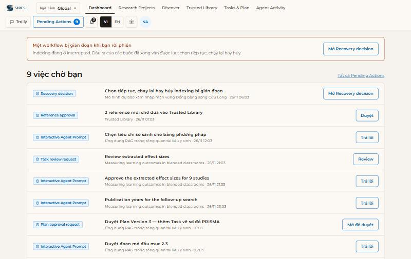
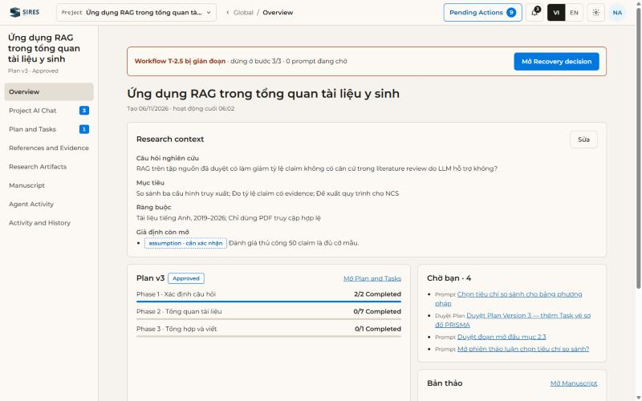
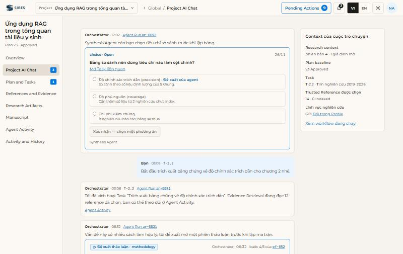
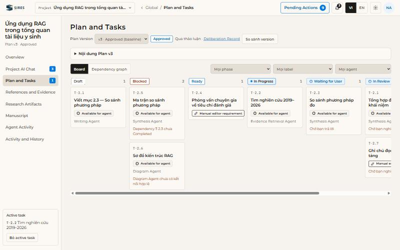
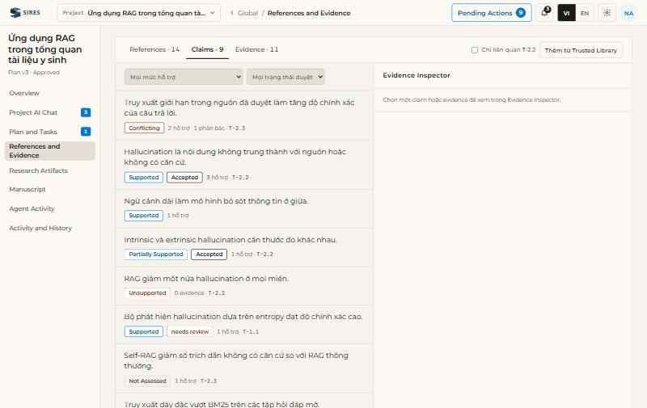
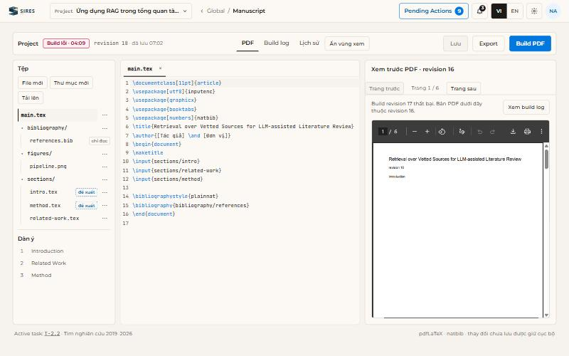
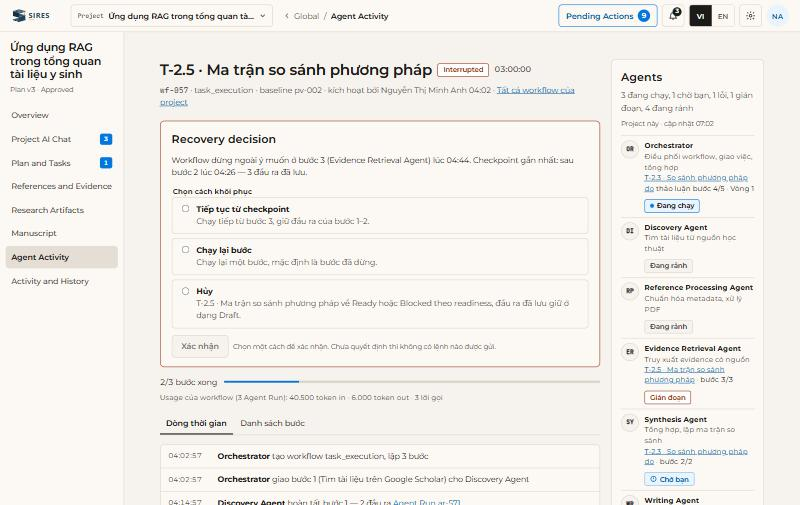
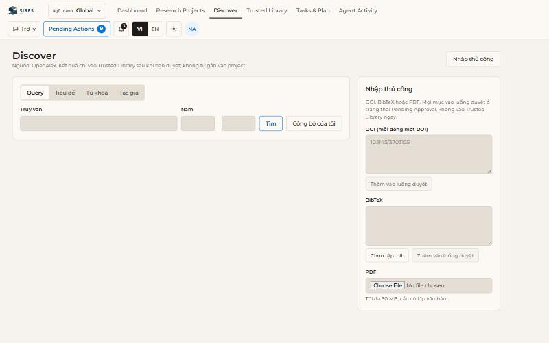
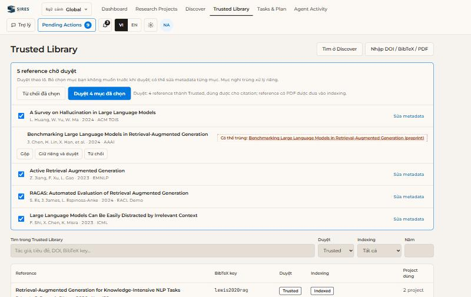
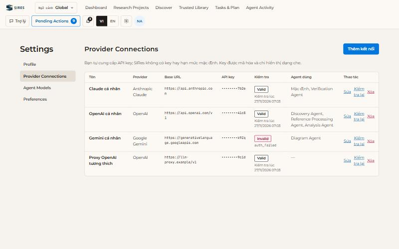
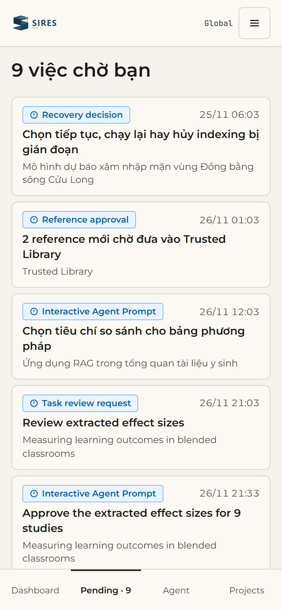
4. Pull request của đợt và kết quả QC
Mọi PR có QC độc lập do một phiên khác phiên làm (QC chéo); báo cáo QC nằm trong agent/execution/PID-*/qc-report.md trên nhánh của PR hoặc trong mô tả PR. Cột “SHA đã QC”: sau SHA đó nhánh chỉ thêm file báo cáo QC, trừ khi ghi khác.
4.1. PH-01 và công cụ (→ main)
| PR | Nội dung | Phiên làm | QC độc lập |
|---|---|---|---|
| #138 | PID-00012 shell web | web-shell | Đạt Lần 3, b157d02 |
| #131 | PID-00013 mock theo OpenAPI (thay #128, #129 vì gitleaks dương tính giả) | web-mocks | Đạt Lần 2, f406d47 |
| #63 | PID-00014 phiên gateway, CSRF, migration (PC-05 P32: giữ bản sửa infra) | Vietanhhhhhh2003, QC thêm mục 5 | Đạt Lần 4, d43618d |
| #125 | PID-00159 vai trò database cục bộ, local:roles, local:migrate, local:services; đã chứa #113 (PID-00016 report) | local-env-oidc | Đạt Lần 2, b453798 |
| #118 | Lệnh nhập key provider, file key ngoài Git; SPK-01 đọc file; sửa G9 (không gửi key proxy tới endpoint chính thức) | provider-keys | Đạt, 4e334f2 |
| #139 | PID-00021 SPK-01 Lần 3 qua proxy (D-KEY); G5, G6, G8 | provider-keys | Đạt Lần 4, ef55e22 |
| #38 | PID-00025 SPK-03: OpenAlex, parser BibTeX/RIS (DEC-60, DEC-61) | local-env-oidc (làm thay Vietanhhhhhh2003) | Đạt, 035608a; đã squash vào main 07:00 (7f6173c) |
| #114, #115 | planning, workspace dùng hằng timeout chung (PC-04 A6) | T1xNTH | Đạt |
| #116, #117 | platform: bỏ timeout tại chỗ (P38); stop()/start() của consumer (P25, P36) | T1xNTH | Đạt |
| #152 | Bỏ semantic_scholar khỏi fake adapter (DEC-60) | local-env-oidc (làm thay T1xNTH) | Đạt, 1588850 |
4.2. Tài liệu (→ main)
| PR | Nội dung | QC độc lập |
|---|---|---|
| #120 | PC-05 P1–P6: nhãn trạng thái bổ sung, replay.unavailable, components.schemas.Event, menu avatar, /auth/logout 303; PID-00012, PID-00159 Sẵn sàng | Đạt |
| #124 | PC-05 đánh dấu 75 mục; DEC-62 invalid_request (đóng OQ-113); DBQ-12, DBQ-13 | Đạt (M1 sửa trong #160) |
| #132 | Google Scholar vào PRD: 13 requirement, 31 AC (282 requirement, 505 AC); đóng OQ-114, OQ-115 | Đạt |
| #112 | PC-06: 24 mục, nhóm H, “Còn chờ PO”; DEC-63–DEC-65; kế hoạch PH-02 giao diện trước | Đạt |
| #121, #136 | Hồ sơ PID-00160 (Sẵn sàng), PID-00161 (đề xuất); script bảng giai đoạn đọc PH-0N đầu tiên | Đạt |
| #122, #123, #127, #133, #134, #135, #137 | Làm rõ 11 PID web (Sẵn sàng): 00036; 00037, 00060; 00058, 00059; 00114; 00082–00084; 00115; 00098 | Đạt |
| #126, #140, #153, #154, #157, #159 | Sửa nguồn theo hồ sơ PID web (hợp đồng, thiết kế, tickets 1.5); #159 thay #156 (gitleaks) | Đạt (#154 Lần 2, #159 Lần 2) |
| #149 | PID-00025-AC04 khớp H3; README gốc theo DEC-60, DEC-61 | Đạt |
4.3. Mã PH-02 (→ develop)
Bảng ở mục 3, cộng #130 (PID-00160 OIDC mock: authorization code + PKCE, nonce, JWKS, end_session, /revoke; client cục bộ chỉ đăng ký /api/v1/auth/callback và /sign-in; 34 test). Đã đóng: #128, #129 (thay bằng #131), #143 (thay bằng #158), #156 (thay bằng #159).
5. Merge (PO làm)
Lệnh merge bằng quyền bypass ruleset bị bộ phân loại an toàn chặn lúc khoảng 01:00 (khi yêu cầu merge chỉ nằm trong lời giao việc đầu đêm). Sau tin nhắn của PO lúc khoảng 07:00 (“Merge hộ tôi đi”), lệnh chạy được. Vì khoảng 30 PR tài liệu cùng sửa file sinh tự động và nhật ký, merge lần lượt sẽ làm các PR sau xung đột, nên mỗi nhánh đích nhận một PR gộp, merge bằng merge commit: head của từng PR con nằm trong nhánh đích nên GitHub tự đánh dấu các PR con là đã merge.
| Lúc | PR | Vào | Cách | Kết quả |
|---|---|---|---|---|
| 07:00 | #38 (PID-00025) | main | squash (nhánh có 11 commit cũ chưa ký) | 7f6173c |
| 07:3x | #160 gộp 31 PR: #120, #138, #131, #118, #139, #63, #114–#117, #152, #125 (đã chứa #113), #121, #136, #112, #122, #126, #123, #127, #153, #124, #132, #133, #140, #134, #157, #135, #154, #137, #159, #149 | main | merge commit; CI 25/25 trước merge | d8f6660; 32 PR con ở trạng thái MERGED; CI của main sau merge đạt |
| 07:35 | #161 gộp 12 PR: #130, #141, #142, #158, #144, #145, #146, #148, #147, #151, #155, #150, cùng main d8f6660 | develop | merge commit; CI 25/25 trước merge | 898eb89; 12 PR con ở trạng thái MERGED; develop chứa toàn bộ main |
Phiên gộp đã kiểm: mọi head PR là tổ tiên của nhánh gộp; tập file đổi của nhánh gộp nằm trong hợp các file của PR con; file sinh được sinh lại (render.mjs 117 trang, bundle redocly, update-index.mjs); nhật ký giữ đủ dòng; #124 và #132 ghép tay ở backlog, PRD 20.3 (21 mục Đã hoàn thành, không còn OQ mở). Đã đóng mà không merge: #128, #129, #143, #156 (thay bằng PR có lịch sử sạch). #119 (đồng bộ develop) được GitHub đánh dấu đã merge vì main đã vào develop qua #161.
6. PH-01
36 PID của PH-01: 30 xong từ đêm 25/11. 6 PID còn lại có PR đạt QC độc lập ở đợt này: PID-00012 (#138), 00013 (#131), 00014 (#63), 00016 (#113, gộp trong #125), 00021 (#139), 00025 (#38), 00159 (#125). PID-00021 kết luận qua proxy theo D-KEY: OpenAI đo đủ; Claude và Gemini ghi “không đo được qua proxy” (proxy không có kênh Claude, Gemini hết thời gian chờ).
| Điều kiện cổng ra (PC-05 P31) | Trạng thái |
|---|---|
| Mọi PID PH-01 xong, QC độc lập nghiệm thu được | Đạt (#38, #160 đã vào main) |
| Báo cáo SPK-01, SPK-03 | Đạt theo D-KEY (SPK-01 qua proxy) và DEC-60, DEC-61 (SPK-03 chỉ OpenAlex); SerpApi chưa có key |
| Hợp đồng baseline; nơi dựng staging | PO đã duyệt 25/11 (PC-04 B6, B7) |
| Môi trường cục bộ đủ vai trò database | Đạt (PID-00159, #125) |
| PO xác nhận cổng ra và làm các việc tại mốc DEC-59 | Chờ PO |
7. Còn chờ PO
Danh sách đầy đủ, kèm “chặn gì, cần trước mốc nào”, ở mục Còn chờ PO của PC-06. Tóm tắt:
- Xác nhận cổng ra PH-01 (PC-05 P31) và làm các việc tại mốc DEC-59 (đổi nhánh mặc định sang
develop, AGENT.md, README, skill; luồng infra sửaci.yml,check-tracks.mjs,nx.json). - Duyệt lại các mục chốt theo đề xuất trong PC-05 (75 mục) và PC-06 (24 mục, nhóm H); mỗi mục ghi căn cứ, đổi được.
- Cấp hoặc làm với bên ngoài: tên miền cho Cloudflare Tunnel của staging (PC-06 B3); người sửa eTroy_OIDC (ETR-10 nonce, ETR-07 logout) trước khi nối thật; nhóm key proxy có kênh Claude và Gemini, hoặc key chính thức, nếu muốn đo hai provider này; key SerpApi, điều khoản gói trả phí (ASM-01, RISK-12), hạn mức tháng; key OpenAlex của hệ thống cho adapter sản phẩm.
- Phiếu I còn mở của PID web: PID-00058 I1 (nguồn “Bước tiếp theo gợi ý”), PID-00059 I1 (tổng hợp usage NFR-USAGE-002), I2 (nhóm sự kiện History), PID-00082 I1 (trình soạn Draft, checklist dạng cây, activity timeline chưa có thiết kế; đề xuất tách PID).
- Mâu thuẫn trong PRD, hợp đồng: trùng DOI (PRD 10 và 18.5); câu edit-and-approve ở PRD 12.5 MS-DIFF-001;
manual_submissionchưa có luồng tạo revision (PRD 12.10); “hoạt động gần nhất” của build bị bỏ khỏi thiết kế nhưng UX-STATE-001 vẫn yêu cầu; cách điềnMessageAccepted.agentRunIdlúc trả 202 (A: workspace cấp trước id; B: chờchat.deltađầu);ArtifactVersionCreate.basedOnVersionIdbắt buộc khi agent tạo mới; đơn vị offset của claim anchor (code point hay UTF-16); hồ sơ PID-00098 N9, H4 vẫn ghilistProjectReferenceslà mock của library, trái H31. - Database cần DBQ: cột cho
validation,diagramType, claim anchor,Workflow.subject(research); Preferences Scholar,scholar_search,import_state,deleted_at(library); citation → claim và vị trí citation trong PDF (manuscript). - Kiến trúc: hợp đồng nội bộ để library nhận hạn mức Scholar của lần chạy và nơi đếm hạn mức tháng; nguồn dữ liệu
ManuscriptUsage(manuscript → research, PID-00079); kiến trúc 2.3 ghi@retorquere/bibtex-parserchưa thử trong khi PID-00024 dùng Citation.js, spike SPK-03 dùng@biblatex/text. - 12 Assumption Google Scholar trong PRD (#132), có nhãn tại chỗ.
- Phạm vi PID-00082: có đưa đính kèm file vào lượt này không; màn Ready (“Bắt đầu thực hiện”) chưa có thiết kế.
8. Ghi chú vận hành
- Cách chạy đợt: 9 phiên song song (tài liệu PC-05, kế hoạch PH-02, shell, mock, Settings, global, môi trường cục bộ, key provider, QC độc lập). Mỗi PR do một phiên khác phiên làm QC (QC chéo); phiên Dev tự QC trước theo DEC-58. Phiên mới chỉ mở được khi PO nhắn trực tiếp, nên các PID sau giao cho phiên đã rảnh.
- Nhánh tích hợp
preview/ui-ph02: lập khi merge bypass bị chặn, để các khu vực dựng tiếp trên shell và mock chưa merge. Xung đột file sinh ở đây giải tạm (giữ một phía), vì nhánh không merge đi đâu; xóa được sau khi #160 và nhánh gộp develop vào. - Gitleaks dương tính giả với khóa BibTeX mẫu (
key: '…') ở fixture mock và thiết kế: gitleaks quét mọi commit của PR, nên phải dựng lại lịch sử nhánh (PR mới #131, #158, #159), không sửagitleaks.toml. - Tích hợp: lỗi chỉ lộ khi gộp nhiều khu vực (hai khu vực cùng khai mock
listProjectReferences) được bắt bằng chạy toàn bộ test web trên nhánh tích hợp; nên giữ bước này trước khi merge một loạt PR giao diện. - Máy PO: Nx ghi cache vào
.nx/cachecủa checkout chính, lỗi ENOENT khi checkout chính bị dọn; worktree đặtNX_CACHE_DIRECTORYriêng. Agent con mở trình duyệt vớifile://bị treo khoảng 4 giờ; kiểm render bằngrender.mjs. Hạn mức sử dụng hết một lần lúc khoảng 05:30, các phiên làm tiếp sau khi reset. - Key provider: nạp file key vào PowerShell đang mở:
Get-Content -LiteralPath 'H:\Troy University\sires\.sires\provider-keys.env' | ForEach-Object { if ($_ -match '^\s*([A-Za-z_][A-Za-z0-9_]*)\s*=\s*(.*)$') { Set-Item -LiteralPath "env:$($Matches[1])" -Value $Matches[2].Trim().Trim("'").Trim('"') } }; đổi key: chạy lạiscripts/development/set-provider-keys.ps1, kiểm dạng key không in giá trị: thêm-Check.